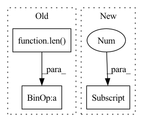

Pattern ID :2046
Before Change
def __init__(self, config):
super(Loss_factory, self).__init__()
if config["lw"] == "":
lw = [1, ] * len( config["loss"])
else:
lw = [float(w) for w in config["lw"].split(",")]
assert len(config["loss"]) == len(lw), "Length of loss and loss_weight should be equal."
After Change
self.loss_cluster = {}
for out_name, loss_casket in loss_config.items():
self.loss_cluster[out_name] = loss_worker(loss_casket[0] , loss_casket[1:])
print("{} loss for output \"{}\".".format(self.loss_cluster[out_name].loss_print, out_name))
def forward(self, preds, target, config):
In pattern: SUPERPATTERN
Frequency: 4
Non-data size: 3
Instances Fragment ID: 4989484
Project Name: moothes/salod
Commit Name: f7e568383ce7d5dd4f7582e346e1d86bb6a4b171
Time: 2022-08-18
Author: zhouhuajun123@126.com
File Name: base/loss.py
M Class Name: Loss_factory
N Class Name: Loss_factory
M Method Name: __init__(2)
N Method Name: __init__(2)
M Parent Class: nn.Module
N Parent Class: nn.Module
M File Name: base/loss.py
N File Name: base/loss.py
M Start Line: 143
M End Line: 150
N Start Line: 190
N End Line: 195
Before Change
self.anchor_generators.append(
AnchorGenerator(anchor_base, anchor_scales, anchor_ratios))
self.num_anchors = len(self.anchor_ratios) * len( self.anchor_scales)
self._init_layers()
def _init_layers(self):
self.conv_cls = nn.Conv2d(self.in_channels,After Change
self.anchor_generator = build_anchor_generator(anchor_generator)
// usually the numbers of anchors for each level are the same
// except SSD detectors
self.num_anchors = self.anchor_generator.num_base_anchors[0]
self._init_layers()
def _init_layers(self):
self.conv_cls = nn.Conv2d(self.in_channels, Fragment ID: 4989486
Project Name: shinya7y/universenet
Commit Name: a6236b789b8f4e2e66c8379199f40ecef9afce06
Time: 2020-04-21
Author: 40779233+ZwwWayne@users.noreply.github.com
File Name: mmdet/models/anchor_heads/anchor_head.py
M Class Name: AnchorHead
N Class Name: AnchorHead
M Method Name: __init__(12)
N Method Name: __init__(15)
M Parent Class: nn.Module
N Parent Class: nn.Module
M File Name: mmdet/models/anchor_heads/anchor_head.py
N File Name: mmdet/models/anchor_heads/anchor_head.py
M Start Line: 45
M End Line: 110
N Start Line: 97
N End Line: 100
Before Change
super().__init__()
// self._encoder = nn.TransformerEncoder(nn.TransformerEncoderLayer(cin, 8, dropout=rate, activation="gelu"), 3)
// self._decoder = nn.TransformerEncoder(nn.TransformerEncoderLayer(cin, 8, dropout=rate, activation="gelu"), 3)
cSplitted = cin // len( k)
for i, numCodewords in enumerate(k):
setattr(self, f"codebook{i}", nn.Parameter(torch.nn.init.kaiming_uniform_(torch.empty(numCodewords, cSplitted))))
// setattr(self, f"tCodebook{i}", nn.Parameter(torch.nn.init.kaiming_normal_(torch.empty(numCodewords, cin))))
// setattr(self, f"palette{i}", nn.Parameter(torch.nn.init.kaiming_uniform_(torch.empty(numCodewords, cin))))After Change
class TransformerQuantizer(nn.Module):
def __init__(self, layers: int, k: List[int], cin: int, rate: float = 0.1):
super().__init__()
k = k[0]
self._position = PositionalEncoding2D(cin, 120, 120)
self._encoder = nn.Transformer(cin, 8, layers, layers, dropout=rate, activation="gelu")
setattr(self, "codebook", nn.Parameter(torch.nn.init.kaiming_uniform_(torch.empty(k, cin))))
self._codebookEncoder = nn.TransformerEncoder(nn.TransformerEncoderLayer(cin, 8, dropout=rate, activation="gelu"), layers) Fragment ID: 4989495
Project Name: xiaosu-zhu/mcquic
Commit Name: a4a40624c11a9779699f4a37cccb5b5ed8bc5048
Time: 2021-04-10
Author: xiaosu.zhu@outlook.com
File Name: src/mcqc/models/quantizer.py
M Class Name: TransformerQuantizer
N Class Name: TransformerQuantizer
M Method Name: __init__(5)
N Method Name: __init__(4)
M Parent Class: nn.Module
N Parent Class: nn.Module
M File Name: src/mcqc/models/quantizer.py
N File Name: src/mcqc/models/quantizer.py
M Start Line: 158
M End Line: 173
N Start Line: 447
N End Line: 457